Simple graphics
In Luxor, there are different ways of working with graphical items. You can either draw them immediately (ie place them on the drawing, and they're then fixed). Or you can construct geometric objects as lists of points for further processing. Watch out for a vertices=true option, which returns coordinate data rather than draws a shape.
Rectangles and boxes
The simple rectangle and box shapes can be made in different ways.
rulers()
sethue("red")
rect(O, 100, 100, :stroke)
sethue("blue")
box(O, 100, 100, :stroke)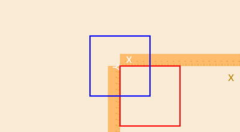
rect() rectangles are positioned by a corner, but a box made with box() can either be defined by its center and dimensions, or by two opposite corners.

If you want the coordinates of the corners of a box, rather than draw one immediately, use:
box(centerpoint, width, height, vertices=true)or
box(corner1, corner2, vertices=true)box is also able to draw some of the other Luxor objects, such as BoundingBoxes and Table cells.
Luxor.rect — Functionrect(xmin, ymin, w, h, action)Create a rectangle with one corner at (xmin/ymin) with width w and height h and then do an action.
See box() for more ways to do similar things, such as supplying two opposite corners, placing by centerpoint and dimensions.
rect(cornerpoint, w, h, action;
vertices=false)Create a rectangle with one corner at cornerpoint with width w and height h and do an action.
Use vertices=true to return an array of the four corner points: bottom left, top left, top right, bottom right.
Luxor.box — Functionbox(cornerpoint1, cornerpoint2, action=:none;
vertices=false)Create a box (rectangle) between two points and do an action.
Use vertices=true to return an array of the four corner points: bottom left, top left, top right, bottom right.
box(points::Array, action=:none)Create a box/rectangle using the first two points of an array of Points to defined opposite corners.
Use vertices=true to return an array of the four corner points: bottom left, top left, top right, bottom right.
box(pt::Point, width, height, action=:none; vertices=false)Create a box/rectangle centered at point pt with width and height. Use vertices=true to return an array of the four corner points rather than draw the box.
box(x, y, width, height, action=:none)Create a box/rectangle centered at point x/y with width and height.
box(pt, width, height, cornerradius, action=:none)Draw a box/rectangle centered at point pt with width and height and round each corner by cornerradius.
box(bbox::BoundingBox, :action;
vertices=false)Make a box using the bounds in bbox.
Use vertices=true to return an array of the four corner points: bottom left, top left, top right, bottom right.
box(tiles::Tiler, n::T where T <: Integer, action::Symbol=:none;
vertices=false)Draw a box in tile n of tiles tiles.
box(t::Table, r::T, c::T, action::Symbol=:none) where T <: IntegerDraw a box in table t at row r and column c.
box(t::Table, cellnumber::Int, action::Symbol=:none; vertices=false)Draw box cellnumber in table t.
box(tile::BoxmapTile, action::Symbol=:none; vertices=false)Use a Boxmaptile to make or draw a rectangular box. Use vertices=true to obtain the coordinates.
Create boxmaps using boxmap().
box() also returns the coordinates of the corners.
box(O, 100, 100, :none)4-element Array{Point,1}:
Point(-50.0, 50.0)
Point(-50.0, -50.0)
Point(50.0, -50.0)
Point(50.0, 50.0)For regular polygons, triangles, pentagons, and so on, see the next section on Polygons.
Circles and ellipses
There are various ways to make circles, including by center and radius, or passing through two or three points:
sethue("black")
p1 = Point(0, -50)
p2 = Point(100, 0)
p3 = Point(0, 65)
map(p -> circle(p, 4, :fill), [p1, p2, p3])
sethue("orange")
circle(center3pts(p1, p2, p3)..., :stroke)
sethue("red")
p1 = Point(0, 30)
p2 = Point(20, -40)
p3 = Point(50, 5)
circle.((p1, p2, p3), 3, :stroke)
circle(p1, p2, p3, :stroke)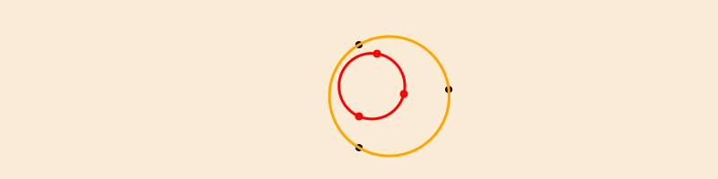
The center3pts() function returns the center position and radius of a circle passing through three points:
sethue("black")
p1 = Point(0, -50)
p2 = Point(100, 0)
p3 = Point(0, 65)
map(p -> circle(p, 4, :fill), [p1, p2, p3])
sethue("orange")
circle(center3pts(p1, p2, p3)..., :stroke)
Luxor.circle — Functioncircle(x, y, r, action=:none)Make a circle of radius r centered at x/y.
action is one of the actions applied by do_action, defaulting to :none. You can also use ellipse() to draw circles and place them by their centerpoint.
circle(pt, r, action=:none)Make a circle centered at pt.
circle(pt1::Point, pt2::Point, action=:none)Make a circle that passes through two points that define the diameter:
circle(pt1::Point, pt2::Point, pt3::Point, action=:none)Make a circle that passes through three points.
Luxor.center3pts — Functioncenter3pts(a::Point, b::Point, c::Point)Find the radius and center point for three points lying on a circle.
returns (centerpoint, radius) of a circle.
If there's no such circle, the function returns (Point(0, 0), 0).
With ellipse() you can place ellipses and circles by defining the center point and the width and height.
tiles = Tiler(500, 300, 5, 5)
width = 20
height = 25
for (pos, n) in tiles
global width, height
randomhue()
ellipse(pos, width, height, :fill)
sethue("black")
label = string(round(width/height, digits=2))
textcentered(label, pos.x, pos.y + 25)
width += 2
end
ellipse() can also construct polygons that are approximations to ellipses. You supply two focal points and a length which is the sum of the distances of a point on the perimeter to the two focii.
fontface("Menlo")
f1 = Point(-100, 0)
f2 = Point(100, 0)
circle.([f1, f2], 3, :fill)
epoly = ellipse(f1, f2, 250, vertices=true)
poly(epoly, :stroke, close=true)
pt = epoly[rand(1:end)]
poly([f1, pt, f2], :stroke)
label("f1", :W, f1, offset=10)
label("f2", :E, f2, offset=10)
label(string(round(distance(f1, pt), digits=1)), :SE, midpoint(f1, pt))
label(string(round(distance(pt, f2), digits=1)), :SW, midpoint(pt, f2))
label("ellipse(f1, f2, 250)", :S, Point(0, 75))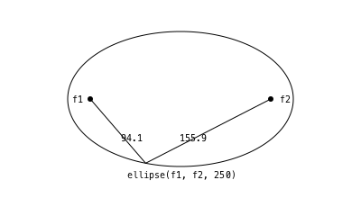
The advantage of this method is that there's a vertices=true option, allowing further scope for polygon manipulation.
f1 = Point(-100, 0)
f2 = Point(100, 0)
ellipsepoly = ellipse(f1, f2, 170, :none, vertices=true)
[ begin
setgray(rescale(c, 150, 1, 0, 1))
poly(offsetpoly(ellipsepoly, c), close=true, :fill);
rotate(π/20)
end
for c in 150:-10:1 ]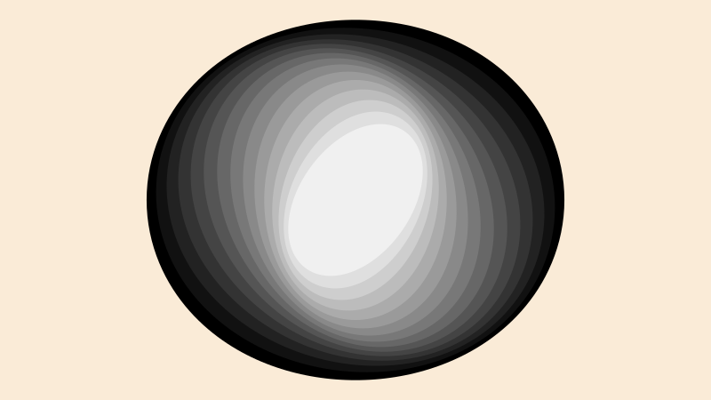
Luxor.ellipse — Functionellipse(xc, yc, w, h, action=:none)Make an ellipse, centered at xc/yc, fitting in a box of width w and height h.
ellipse(cpt, w, h, action=:none)Make an ellipse, centered at point c, with width w, and height h.
ellipse(focus1::Point, focus2::Point, k, action=:none;
stepvalue=pi/100,
vertices=false,
reversepath=false)Build a polygon approximation to an ellipse, given two points and a distance, k, which is the sum of the distances to the focii of any points on the ellipse (or the shortest length of string required to go from one focus to the perimeter and on to the other focus).
ellipse(focus1::Point, focus2::Point, pt::Point, action=:none;
stepvalue=pi/100,
vertices=false,
reversepath=false)Build a polygon approximation to an ellipse, given two points and a point somewhere on the ellipse.
circlepath() constructs a circular path from Bézier curves, which allows you to use circles as paths.
setline(4)
tiles = Tiler(600, 250, 1, 5)
for (pos, n) in tiles
randomhue()
circlepath(pos, tiles.tilewidth/2, :path)
newsubpath()
circlepath(pos, rand(5:tiles.tilewidth/2 - 1), :fill, reversepath=true)
end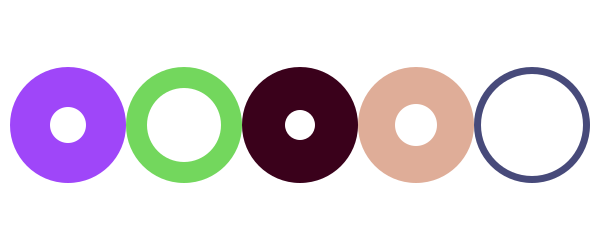
Luxor.circlepath — Functioncirclepath(center::Point, radius, action=:none;
reversepath=false,
kappa = 0.5522847498307936)Draw a circle using Bézier curves.
The magic value, kappa, is 4.0 * (sqrt(2.0) - 1.0) / 3.0.
Circles and tangents
Functions to find tangents to circles include:
pointcircletangent()finds a point on a line joining a point and tangent to a circlecirclecircleoutertangents()finds the points that lie on outer tangents to two circlescirclecircleinnertangents()finds the points that lie on inner tangents to two circlescircletangent2circles()makes circles of a particular radius tangential to two circlescirclepointtangent()makes circles of a particular radius passing through a point and tangential to another circle
point = Point(-150, 0)
circlecenter = Point(150, 0)
circleradius = 80
circle.((point, circlecenter), 5, :fill)
circle(circlecenter, circleradius, :stroke)
pt1, pt2 = pointcircletangent(point, circlecenter, circleradius)
sethue("grey65")
rule(point, slope(point, pt1))
rule(point, slope(point, pt2))
circle1center = Point(-150, 0)
circle1radius = 60
circle2center = Point(150, 0)
circle2radius = 80
circle.((circle1center, circle2center), 5, :fill)
circle(circle1center, circle1radius, :stroke)
circle(circle2center, circle2radius, :stroke)
p1, p2, p3, p4 = circlecircleoutertangents(
circle1center, circle1radius,
circle2center, circle2radius)
sethue("orange")
rule(p1, slope(p1, p2))
rule(p3, slope(p3, p4))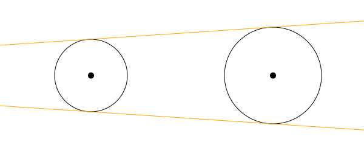
Finding the inner tangents requires a separate function.
circle1center = Point(-150, 0)
circle1radius = 60
circle2center = Point(150, 0)
circle2radius = 80
circle.((circle1center, circle2center), 5, :fill)
circle(circle1center, circle1radius, :stroke)
circle(circle2center, circle2radius, :stroke)
p1, p2, p3, p4 = circlecircleinnertangents(
circle1center, circle1radius,
circle2center, circle2radius)
label.(("p1", "p2", "p3", "p4"), :n, (p1, p2, p3, p4))
sethue("orange")
rule(p1, slope(p1, p2))
rule(p3, slope(p3, p4))
sethue("purple")
circle.((p1, p2, p3, p4), 3, :fill)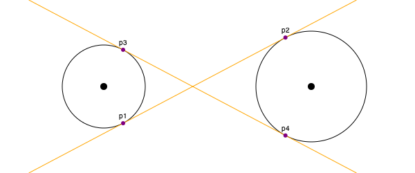
circletangent2circles() takes the required radius and two existing circles:
circle1 = (Point(-100, 0), 90)
circle(circle1..., :stroke)
circle2 = (Point(100, 0), 90)
circle(circle2..., :stroke)
requiredradius = 25
ncandidates, p1, p2 = circletangent2circles(requiredradius, circle1..., circle2...)
if ncandidates==2
sethue("orange")
circle(p1, requiredradius, :fill)
sethue("green")
circle(p2, requiredradius, :fill)
sethue("purple")
circle(p1, requiredradius, :stroke)
circle(p2, requiredradius, :stroke)
end
# the circles are 10 apart, so there should be just one circle
# that fits there
requiredradius = 10
ncandidates, p1, p2 = circletangent2circles(requiredradius, circle1..., circle2...)
if ncandidates==1
sethue("blue")
circle(p1, requiredradius, :fill)
sethue("cyan")
circle(p1, requiredradius, :stroke)
end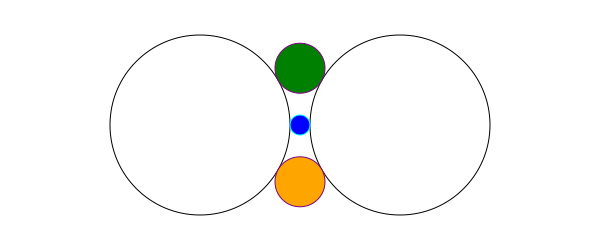
circlepointtangent() looks for circles of a specified radius that pass through a point and are tangential to a circle. There are usually two candidates.
circle1 = (Point(-100, 0), 90)
circle(circle1..., :stroke)
requiredradius = 50
requiredpassthrough = O + (80, 0)
ncandidates, p1, p2 = circlepointtangent(requiredpassthrough, requiredradius, circle1...)
if ncandidates==2
sethue("orange")
circle(p1, requiredradius, :stroke)
sethue("green")
circle(p2, requiredradius, :stroke)
end
sethue("black")
circle(requiredpassthrough, 4, :fill)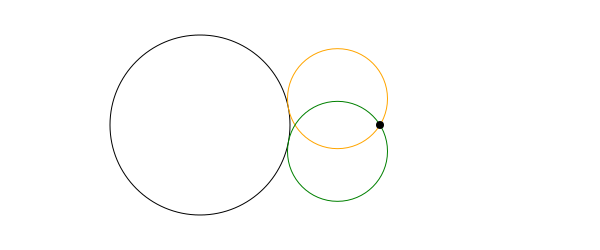
These last two functions can return 0, 1, or 2 points (since there are often two solutions to a specific geometric layout).
Luxor.pointcircletangent — Functionpointcircletangent(point::Point, circlecenter::Point, circleradius)Find the two points on a circle that lie on tangent lines passing through an external point.
If both points are O, the external point is inside the circle, and the result is (O, O).
Luxor.circletangent2circles — Functioncircletangent2circles(radius, circle1center::Point, circle1radius, circle2center::Point, circle2radius)Find the centers of up to two circles of radius radius that are tangent to the two circles defined by circle1... and circle2.... These two circles can overlap, but one can't be inside the other.
(0, O, O) - no such circles exist
(1, pt1, O) - 1 circle exists, centered at pt1
(2, pt1, pt2) - 2 circles exist, with centers at pt1 and pt2
(The O are just dummy points so that three values are always returned.)
Luxor.circlepointtangent — Functioncirclepointtangent(through::Point, radius, targetcenter::Point, targetradius)Find the centers of up to two circles of radius radius that pass through point through and are tangential to a circle that has radius targetradius and center targetcenter.
This function returns a tuple:
(0, O, O) - no circles exist
(1, pt1, O) - 1 circle exists, centered at pt1
(2, pt1, pt2) - 2 circles exist, with centers at pt1 and pt2
(The O are just dummy points so that three values are always returned.)
Luxor.circlecircleinnertangents — Functioncirclecircleinnertangents(circle1center::Point, circle1radius, circle2center::Point, circle2radius)
Find the inner tangents of two circles. These are tangent lines that cross as they skim past one circle and touch the other.
Returns the four points: tangentpoint1 on circle 1, tangentpoint1 on circle2, tangentpoint2 on circle 1, tangentpoint2 on circle2.
Returns (O, O, O, O) if inner tangents can't be found (eg when the circles overlap).
Use circlecircleoutertangents() to find the outer tangents.
Luxor.circlecircleoutertangents — Functioncirclecircleoutertangents(cpt1::Point, r1, cpt2::Point, r2)Return four points, p1, p2,p3,p4, where a line throughp1andp2, and a line throughp3andp4, form the outer tangents to the circles defined bycpt1/r1andcpt2/r2`.
Returns four identical points (O) if one of the circles lies inside the other.
Paths and positions
A path is a sequence of lines and curves. You can add lines and curves to the current path, then use closepath() to join the last point to the first.
A path can have subpaths, created withnewsubpath(), which can form holes.
There is a 'current position' which you can set with move(), and can use implicitly in functions like line(), rline(), text(), arc() and curve().
Luxor.move — Functionmove(pt)Move to a point.
Luxor.rmove — Functionrmove(pt)Move relative to current position by the pt's x and y:
Luxor.newpath — Functionnewpath()Create a new path. This is Cairo's new_path() function.
Luxor.newsubpath — Functionnewsubpath()Add a new subpath to the current path. This is Cairo's new_sub_path() function. It can be used for example to make holes in shapes.
Luxor.closepath — Functionclosepath()Close the current path. This is Cairo's close_path() function.
Lines
Use line() and rline() to draw straight lines. line(pt1, pt2, action) draws a line between two points. line(pt) adds a line to the current path going from the current position to the point. rline(pt) adds a line relative to the current position.
Luxor.line — Functionline(pt)Draw a line from the current position to the pt.
line(pt1::Point, pt2::Point, action=:none)Make a line between two points, pt1 and pt2 and do an action.
Luxor.rline — Functionrline(pt)Draw a line relative to the current position to the pt.
You can use rule() to draw a line through a point, optionally at an angle to the current x-axis.
y = 10
for x in 10 .^ range(0, length=100, stop=3)
global y
circle(Point(x, y), 2, :fill)
rule(Point(x, y), -π/2, boundingbox=BoundingBox(centered=false))
y += 2
end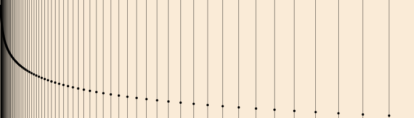
Use the boundingbox keyword argument to crop the ruled lines with a BoundingBox.
origin()
box(BoundingBox() * 0.9, :stroke)
for x in 10 .^ range(0, length=100, stop=3)
rule(Point(x, 0), π/2, boundingbox=BoundingBox() * 0.9)
rule(Point(-x, 0), π/2, boundingbox=BoundingBox() * 0.9)
endtrue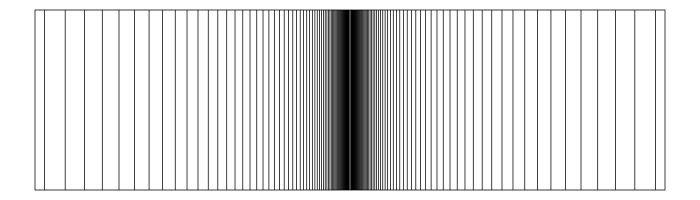
Luxor.rule — Functionrule(pos, theta;
boundingbox=BoundingBox(),
vertices=false)Draw a straight line through pos at an angle theta from the x axis.
By default, the line spans the entire drawing, but you can supply a BoundingBox to change the extent of the line.
rule(O) # draws an x axis
rule(O, pi/2) # draws a y axisThe function:
rule(O, pi/2, boundingbox=BoundingBox()/2)draws a line that spans a bounding box half the width and height of the drawing, and returns a Set of end points. If you just want the vertices and don't want to draw anything, use vertices=true.
Arrows
You can draw lines, arcs, and curves with arrows at the end with arrow(). For straight arrows, supply the start and end points. For arrows as circular arcs, you provide center, radius, and start and finish angles. You can optionally provide dimensions for the arrowheadlength and arrowheadangle of the tip of the arrow (angle in radians between side and center). The default line weight is 1.0, equivalent to setline(1)), but you can specify another.
arrow(O, Point(0, -65))
arrow(O, Point(100, -65), arrowheadlength=20, arrowheadangle=pi/4, linewidth=.3)
arrow(O, 100, π, π/2, arrowheadlength=25, arrowheadangle=pi/12, linewidth=1.25)
If you provide four points, you can draw a Bézier curve with optional arrowheads at each end. Use the various options to control their presence and appearance.
pts = ngon(O, 100, 8, vertices=true)
sethue("mediumvioletred")
arrow(pts[2:5]..., :stroke, startarrow=false, finisharrow=true)
sethue("cyan4")
arrow(pts[3:6]..., startarrow=true, finisharrow=true)
sethue("midnightblue")
arrow(pts[[4, 2, 6, 8]]..., :stroke,
startarrow=true,
finisharrow=true,
arrowheadangle = π/6,
arrowheadlength = 35,
linewidth = 1.5)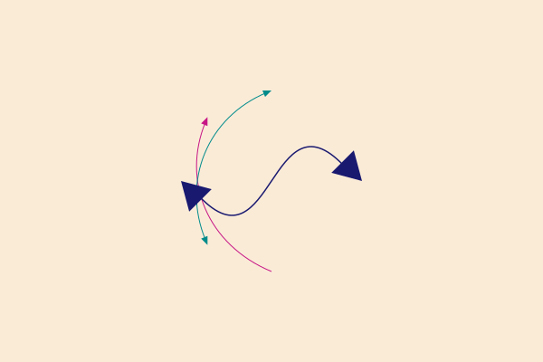
The arrow() functions allow you to specify decoration - graphics at a point somewhere along the shaft. For example, say you want to draw a number and a circle at the midpoint of an arrow, define a function that draws text t in a circle of radius r :
function marker(r, t)
@layer begin
sethue("purple")
circle(O, r, :fill)
sethue("white")
fontsize(30)
text(string(t), halign=:center, valign=:middle)
end
endand then pass it to the decorate keyword. By default, the graphics origin when the function is called is placed at the midpoint (0.5) of the arrow's shaft.
pts = ngon(O, 100, 5, vertices=true)
sethue("mediumvioletred")
# using an anonymous function
arrow(pts[1:4]..., decorate = () -> marker(10, 3))
sethue("olivedrab")
# no arrow, just a graphic, at 0.75
arrow(pts[1:4]..., decorate = () -> ngon(O, 20, 4, 0, :fill), decoration = 0.75, :none)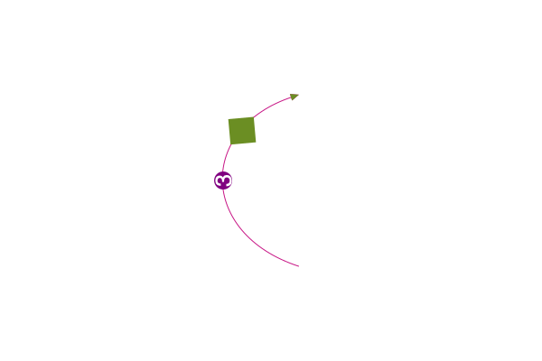
Use the decoration keyword to specify a location other than the default 0.5.
The graphics environment provided by the decorate function is centered at the decoration point, and rotated to the slope of the curve at that point.
Luxor.arrow — Functionarrow(startpoint::Point, endpoint::Point;
linewidth = 1.0,
arrowheadlength = 10,
arrowheadangle = pi/8,
decoration = 0.5,
decorate = () -> ())Draw a line between two points and add an arrowhead at the end. The arrowhead length will be the length of the side of the arrow's head, and the arrowhead angle is the angle between the sloping side of the arrowhead and the arrow's shaft.
Arrows don't use the current linewidth setting (setline()), and defaults to 1, but you can specify another value. It doesn't need stroking/filling, the shaft is stroked and the head filled with the current color.
The decorate keyword argument accepts a function that can execute code at locations on the arrow's shaft. The inherited graphic environment is centered at each point on the curve between 0 and 1 given by scalar or vector decoration, and the x-axis is aligned with the direction of the curve at that point.
arrow(centerpos::Point, radius, startangle, endangle;
linewidth = 1.0,
arrowheadlength = 10,
arrowheadangle = pi/8,
decoration = 0.5,
decorate = () -> ())Draw a curved arrow, an arc centered at centerpos starting at startangle and ending at endangle with an arrowhead at the end. Angles are measured clockwise from the positive x-axis.
Arrows don't use the current linewidth setting (setline()); you can specify the linewidth.
The decorate keyword argument accepts a function that can execute code at locations on the arrow's shaft. The inherited graphic environment is centered at points on the curve between 0 and 1 given by scalar or vector decoration, and the x-axis is aligned with the direction of the curve at that point.
arrow(start::Point, C1::Point, C2::Point, finish::Point, action=:stroke;
linewidth=1.0,
arrowheadlength=10,
arrowheadangle=pi/8,
startarrow=false,
finisharrow=true,
decoration = 0.5,
decorate = () -> ()))Draw a Bezier curved arrow, from start to finish, with control points C1 and C2. Arrow heads can be added/hidden by changing startarrow and finisharrow options.
The decorate keyword argument accepts a function that can execute code at locations on the arrow's shaft. The inherited graphic environment is centered at each point on the curve given by scalar or vector decoration, and the x-axis is aligned with the direction of the curve at that point (TODO - more or less - is it actually correct?).
arrow(start::Point, finish::Point, height::Vector, action=:stroke;
keyword arguments...)Draw a Bézier arrow between start and finish, with control points defined to fit in an imaginary box defined by the two supplied height values (see bezierfrompoints()). If the height values are different signs, the arrow will change direction on its way.
Keyword arguments are the same as arrow(pt1, pt2, pt3, pt4).
Example
arrow(pts[1], pts[end], [15, 15],
decoration = 0.5,
decorate = () -> text(string(pts[1])))Arcs and curves
There are a few standard arc-drawing commands, such as curve(), arc(), carc(), and arc2r(). Because these are often used when building complex paths, they usually add arc sections to the current path. To construct a sequence of lines and arcs, use the :path action, followed by a final :stroke or similar.
curve() constructs Bézier curves from control points:
setline(.5)
pt1 = Point(0, -125)
pt2 = Point(200, 125)
pt3 = Point(200, -125)
label.(string.(["O", "control point 1", "control point 2", "control point 3"]),
:e,
[O, pt1, pt2, pt3])
sethue("red")
map(p -> circle(p, 4, :fill), [O, pt1, pt2, pt3])
line(O, pt1, :stroke)
line(pt2, pt3, :stroke)
sethue("black")
setline(3)
# start a path
move(O)
curve(pt1, pt2, pt3) # add to current path
strokepath()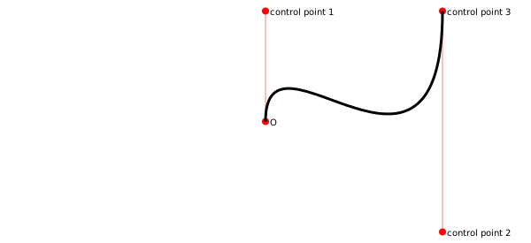
arc2r() draws a circular arc centered at a point that passes through two other points:
tiles = Tiler(700, 200, 1, 6)
for (pos, n) in tiles
c1, pt2, pt3 = ngon(pos, rand(10:50), 3, rand(0:pi/12:2pi), vertices=true)
sethue("black")
map(pt -> circle(pt, 4, :fill), [c1, pt3])
sethue("red")
circle(pt2, 4, :fill)
randomhue()
arc2r(c1, pt2, pt3, :stroke)
end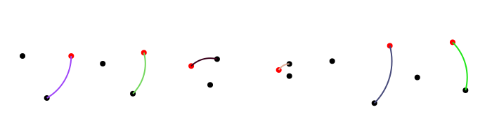
arc2sagitta() and carc2sagitta() make circular arcs based on two points and the sagitta (the maximum height from the chord).
pt1 = Point(-100, 0)
pt2 = Point(100, 0)
for n in reverse(range(1, length=7, stop=120))
sethue("red")
rule(Point(0, -n))
sethue(LCHab(70, 80, rescale(n, 120, 1, 0, 359)))
pt, r = arc2sagitta(pt1, pt2, n, :fillpreserve)
sethue("black")
strokepath()
text(string(round(n)), O + (120, -n))
end
circle.((pt1, pt2), 5, :fill)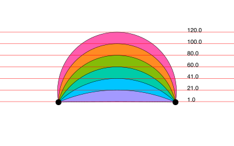
Luxor.arc — Functionarc(xc, yc, radius, angle1, angle2, action=:none)Add an arc to the current path from angle1 to angle2 going clockwise, centered at xc, yc.
Angles are defined relative to the x-axis, positive clockwise.
arc(centerpoint::Point, radius, angle1, angle2, action=:none)Add an arc to the current path from angle1 to angle2 going clockwise, centered at centerpoint.
Luxor.arc2r — Function arc2r(c1::Point, p2::Point, p3::Point, action=:none)Add a circular arc centered at c1 that starts at p2 and ends at p3, going clockwise, to the current path.
c1-p2 really determines the radius. If p3 doesn't lie on the circular path, it will be used only as an indication of the arc's length, rather than its position.
Luxor.carc — Functioncarc(xc, yc, radius, angle1, angle2, action=:none)Add an arc to the current path from angle1 to angle2 going counterclockwise, centered at xc/yc.
Angles are defined relative to the x-axis, positive clockwise.
carc(centerpoint::Point, radius, angle1, angle2, action=:none)Add an arc centered at centerpoint to the current path from angle1 to angle2, going counterclockwise.
Luxor.carc2r — Functioncarc2r(c1::Point, p2::Point, p3::Point, action=:none)Add a circular arc centered at c1 that starts at p2 and ends at p3, going counterclockwise, to the current path.
c1-p2 really determines the radius. If p3 doesn't lie on the circular path, it will be used only as an indication of the arc's length, rather than its position.
Luxor.arc2sagitta — Functionarc2sagitta(p1::Point, p2::Point, s, action=:none)Make a clockwise arc starting at p1 and ending at p2 that reaches a height of s, the sagitta, at the middle. Might append to current path...
Return tuple of the center point and the radius of the arc.
Luxor.carc2sagitta — Functioncarc2sagitta(p1::Point, p2::Point, s, action=:none)Make a counterclockwise arc starting at p1 and ending at p2 that reaches a height of s, the sagitta, at the middle. Might append to current path...
Return tuple of center point and radius of arc.
Luxor.curve — Functioncurve(x1, y1, x2, y2, x3, y3)
curve(p1, p2, p3)Add a Bézier curve.
The spline starts at the current position, finishing at x3/y3 (p3), following two control points x1/y1 (p1) and x2/y2 (p2).
More curved shapes: sectors, spirals, and squircles
A sector (technically an "annular sector") has an inner and outer radius, as well as start and end angles.
sethue("tomato")
sector(50, 90, π/2, 0, :fill)
sethue("olive")
sector(Point(O.x + 200, O.y), 50, 90, 0, π/2, :fill)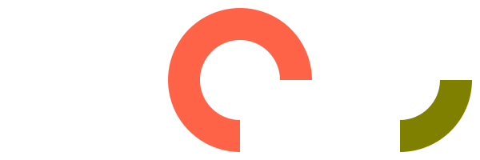
You can also supply a value for a corner radius. The same sector is drawn but with rounded corners.
sethue("tomato")
sector(50, 90, π/2, 0, 15, :fill)
sethue("olive")
sector(Point(O.x + 200, O.y), 50, 90, 0, π/2, 15, :fill)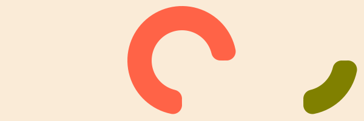
Luxor.sector — Functionsector(centerpoint::Point, innerradius, outerradius, startangle, endangle, action:none)Draw an annular sector centered at centerpoint.
sector(innerradius::Real, outerradius::Real, startangle::Real, endangle::Real,
action::Symbol=:none)Draw an annular sector centered at the origin.
sector(centerpoint::Point, innerradius, outerradius, startangle, endangle,
cornerradius, action:none)Draw an annular sector with rounded corners, basically a bent sausage shape, centered at centerpoint.
TODO: The results aren't 100% accurate at the moment. There are small discontinuities where the curves join.
The cornerradius is reduced from the supplied value if neceesary to prevent overshoots.
sector(innerradius::Real, outerradius::Real, startangle::Real, endangle::Real,
cornerradius::Real, action::Symbol=:none)Draw an annular sector with rounded corners, centered at the current origin.
A pie (or wedge) has start and end angles.
pie(0, 0, 100, π/2, π, :fill)
Luxor.pie — Functionpie(x, y, radius, startangle, endangle, action=:none)Draw a pie shape centered at x/y. Angles start at the positive x-axis and are measured clockwise.
pie(centerpoint, radius, startangle, endangle, action=:none)Draw a pie shape centered at centerpoint.
Angles start at the positive x-axis and are measured clockwise.
pie(radius, startangle, endangle, action=:none)Draw a pie shape centered at the origin
To construct spirals, use the spiral() function. These can be drawn directly, or used as polygons. The default is to draw Archimedean (non-logarithmic) spirals.
spiraldata = [
(-2, "Lituus", 50),
(-1, "Hyperbolic", 100),
( 1, "Archimedes", 1),
( 2, "Fermat", 5)]
grid = GridRect(O - (200, 0), 130, 50)
for aspiral in spiraldata
@layer begin
translate(nextgridpoint(grid))
spiral(last(aspiral), first(aspiral), period=20π, :stroke)
label(aspiral[2], :S, offset=100)
end
end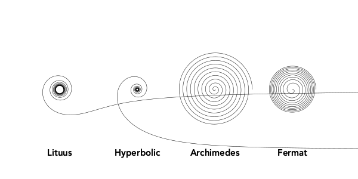
Use the log=true option to draw logarithmic (Bernoulli or Fibonacci) spirals.
spiraldata = [
(10, 0.05),
(4, 0.10),
(0.5, 0.17)]
grid = GridRect(O - (200, 0), 175, 50)
for aspiral in spiraldata
@layer begin
translate(nextgridpoint(grid))
spiral(first(aspiral), last(aspiral), log=true, period=10π, :stroke)
label(string(aspiral), :S, offset=100)
end
endModify the stepby and period parameters to taste, or collect the vertices for further processing.
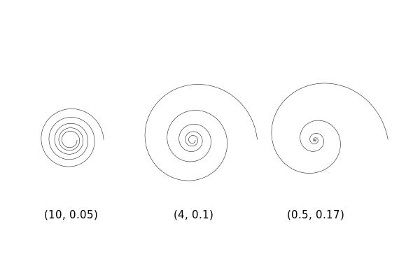
Luxor.spiral — Functionspiral(a, b, action::Symbol=:none;
stepby = 0.01,
period = 4pi,
vertices = false,
log=false)Make a spiral. The two primary parameters a and b determine the start radius, and the tightness.
For linear spirals (log=false), b values are:
lituus: -2
hyperbolic spiral: -1
Archimedes' spiral: 1
Fermat's spiral: 2For logarithmic spirals (log=true):
golden spiral: b = ln(phi)/ (pi/2) (about 0.30)Values of b around 0.1 produce tighter, staircase-like spirals.
A squircle is a cross between a square and a circle. You can adjust the squariness and circularity of it to taste by supplying a value for the root (keyword rt):
setline(2)
tiles = Tiler(600, 250, 1, 3)
for (pos, n) in tiles
sethue("lavender")
squircle(pos, 80, 80, rt=[0.3, 0.5, 0.7][n], :fillpreserve)
sethue("grey20")
strokepath()
textcentered("rt = $([0.3, 0.5, 0.7][n])", pos)
end
Luxor.squircle — Functionsquircle(center::Point, hradius, vradius, action=:none;
rt = 0.5, stepby = pi/40, vertices=false)Make a squircle or superellipse (basically a rectangle with rounded corners). Specify the center position, horizontal radius (distance from center to a side), and vertical radius (distance from center to top or bottom):
The root (rt) option defaults to 0.5, and gives an intermediate shape. Values less than 0.5 make the shape more rectangular. Values above make the shape more round. The horizontal and vertical radii can be different.
To draw a simple rounded rectangle, supply a corner radius:
setline(4)
box(O, 200, 150, 10, :stroke)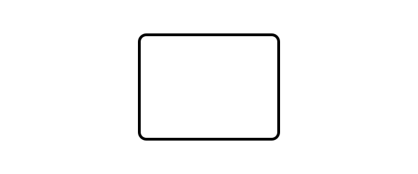
Or you could smooth the corners of a box, like so:
setline(4)
polysmooth(box(O, 200, 150, vertices=true), 10, :stroke)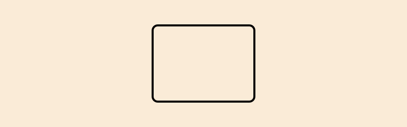